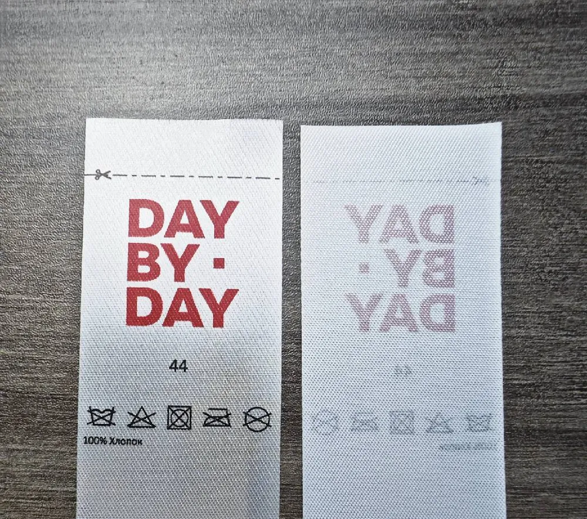

A label that already exists, or a new one
Care labels are reordered far more often than they are designed — the content rarely changes, the artwork only moves when a composition or a market changes. That makes the two paths quite different in cost.
Repeat an existing design
Same content, same construction, another run. Screens or the weave programme are on file, so there is no new tooling and the label matches the last delivery exactly.
- MOQ
- Can run below 3,000 pcs — ask first
- Tooling
- None if the artwork is unchanged
- Sampling
- 3–5 working days on a changed detail
- Bulk
- 10–15 working days
New content or new construction
A new composition, a new market, a new fold or a new material. Screens are made per colour per design, so tooling is charged once and colour count is what moves it.
- MOQ
- 3,000 pcs per design
- Tooling
- Screen per colour, per design
- Sampling
- 3–5 working days
- Bulk
- 10–15 working days after sample approval
The numbers, before you send an enquiry
A care label is cheap per piece and expensive when it is wrong — the cost of a recall is not measured in cents. These are the terms we quote against.
| Item | What we quote | What changes it |
|---|---|---|
| MOQ | 3,000 pcs per design | Repeat designs can run lower; new content needs screens |
| Sampling | 3–5 working days after artwork is confirmed | Material, fold type, colour count, number of languages |
| Bulk production | 10–15 working days after sample approval | Material, variants, and peak season (February–June) |
| Tooling | Print screen per colour per design, or the weave programme for a woven care label — charged once | Colour count |
| Standard build | 40 mm nylon tape, 40 × 80 mm finished, 1 colour, hot cut | This is the specification we cost as standard; everything else is a variant |
| Wash standard | Washed against the care instruction the label itself carries; our standard test point is 5 cycles at colour fastness grade 4 or better, with no loss of legibility | Temperature, detergent, bleach, tumble dry, industrial laundering |
| Price basis | Per piece, at the quantity you give: 3k / 5k / 10k / 30k / 50k / 100k tiers | Material, width and length, colours, fold, cut, one or both sides printed |
| Payment | 30% deposit with the order, 70% before shipment, by T/T | Confirmed on the written quotation |
| Trade terms | FOB Shenzhen / Guangzhou, or EXW on request | Courier for samples is quoted separately |
※ MOQ, lead time and sample terms above are the reference values we quote against; the written quotation for your specification governs.

Where a garment's quality promise actually breaks
A care label is read twice: once by the customer at the sink, and once by a compliance officer with a ruler. It has to survive both.
The failure is rarely the printing. It is the material choice against the wash cycle. A printed satin ribbon that looks perfect on a retail shirt will soften, curl and lose contrast after a season of 60 °C industrial washing — and the complaint lands on the brand, not on the trim supplier.
So we start from the wash cycle, not from the artwork: which temperature, how many cycles, chlorine or oxygen bleach, tumble dry or line dry. The material and the print method follow from that answer.
- Woven care labels — polyester tape, satin or taffeta weave; the most durable option for workwear, medical and industrial laundry
- Printed care labels — satin, nylon taffeta or cotton tape; fine detail and small type, best for home-laundry apparel
- Coated care labels — coated paper or film; crisp small print, suited to high-volume retail programmes
- Heat transfer labels — no sew-in tape; used where a label would show through or irritate
| Spec | Typical range |
|---|---|
| Size | 10 × 30 mm up to 40 × 120 mm (custom) |
| Fold styles | End fold, centre fold, loop fold, mitre fold, straight cut |
| Content | Fibre composition, care symbols (ISO 3758), origin, RN / style number, size, multilingual text |
| Colours | Black, white, Pantone matching on request |
| Attachment | Sewn both ends, sewn one end, heat transfer |
What each market requires on the label
We check the label content against the destination market before the plates are made — this is the part that most often comes back from a customs inspection or a retail audit.
| Market | What the label generally has to carry |
|---|---|
| United States | Care instructions that cover regular care, fibre content, country of origin, and an RN number where applicable. California shipments may need a Proposition 65 warning. |
| European Union | Fibre composition under Regulation (EU) No 1007/2011, care symbols following ISO 3758, and origin marking where the buyer requires it. |
| Japan | Care symbols under JIS L 0001, plus composition and handling-party information under the Household Goods Quality Labelling Act. |
| Korea | Fibre composition, care handling symbols and country of origin, in Korean, under the Quality Management and Safety Control of Industrial Products Act. |
| China | Composition, care symbols and origin under GB 5296.4, in Chinese. |
Regulation text changes, and the legal responsibility for label content stays with the brand owner. What we do is catch the obvious gap — a missing origin line, a symbol set from the wrong market, a composition that does not add to 100 — before it goes to print at volume.
From your composition list to a box of labels
Six steps, with the content checked before tooling is spent.
Content check
Composition, symbols, origin and language reviewed against the destination market before anything is set up.
Material and fold
Chosen from the wash cycle and the placement, then written into the specification the quote is built on.
Sample
3–5 working days. Sewn into a spare garment and washed if the cycle is demanding.
Sample approval
Legibility after wash and symbol accuracy signed off; the sealed sample is the reference for bulk.
Bulk
10–15 working days, printed or woven to the approved artwork and colour.
Inspection & packing
Measured against the sealed sample, wash-tested, counted per design and packed as specified.
What to send with your enquiry
Six items get you a tier price and a sample date in one reply.
Composition and care text
Fibre percentages that add to 100, wash temperature, dry and iron instructions.
Market and language
US, UK, EU, Japan, Korea — and which languages have to appear on the label.
Wash cycle
Home laundry or industrial; temperature, bleach, tumble dry. This chooses the material.
Size, fold and placement
Finished size, fold style, and whether it is sewn into a side seam or the neck.
Quantity and size split
Total per design, split across sizes and colourways if the label carries the size.
In-hand date
The date the labels have to reach your factory, allowing for shipping and for corrections.
How the label is tested before it ships
- Wash test — the finished label is washed against the care instruction it carries, not against a generic cycle
- Colour fastness — bleeding and crocking checks, particularly on dark ground colours and multi-language labels
- Legibility after wash — small type is re-read at the smallest size the market allows, not at comfortable size
- Attachment strength — pull testing on both sew-in and heat-transfer options
- Content check — composition, symbols and origin reviewed against the destination market's requirement
Read more in the trims FAQ library: care label standards by market, choosing the material, fold types explained, and multilingual label layout.
Questions buyers ask before ordering
What has to be printed on a care label for the US market?
Care instructions that cover regular care, and a label that survives the procedure it describes. Separately, fibre content and country of origin have to be disclosed, and where a Proposition 65 warning is needed for California it has to appear. We check the wording against the market you ship to before the plates are made.
Which care label material survives industrial laundering?
For workwear, medical uniforms and anything washed at high temperature, a woven polyester tape or a coated label holds its print far better than a printed satin ribbon. Printed satin is fine for retail apparel washed at home, but it softens and can fade after repeated industrial cycles.
Can one care label carry several languages?
Yes. Multilingual labels are common for European programmes. The constraint is space rather than printing: we size the label to the number of languages and the fold style, so the text stays legible instead of being shrunk to fit.
What is the minimum order for custom care labels?
3,000 pieces per design. Repeat orders against existing screens or a weave programme can run lower, because the tooling is already on file — ask before you plan the run.
How long does sampling and production take?
Sampling is normally 3–5 working days after artwork approval, and bulk production 10–15 working days depending on material and the number of variants. Both are reference figures confirmed on the quotation.
Do you check label content for compliance, or only print what we send?
We check it. Composition percentages, care symbols, origin marking and the required language are reviewed against the destination market before production, and anything that looks inconsistent is flagged. Legal responsibility stays with the brand, but catching a missing origin line before 50,000 labels are printed is cheaper for everyone.